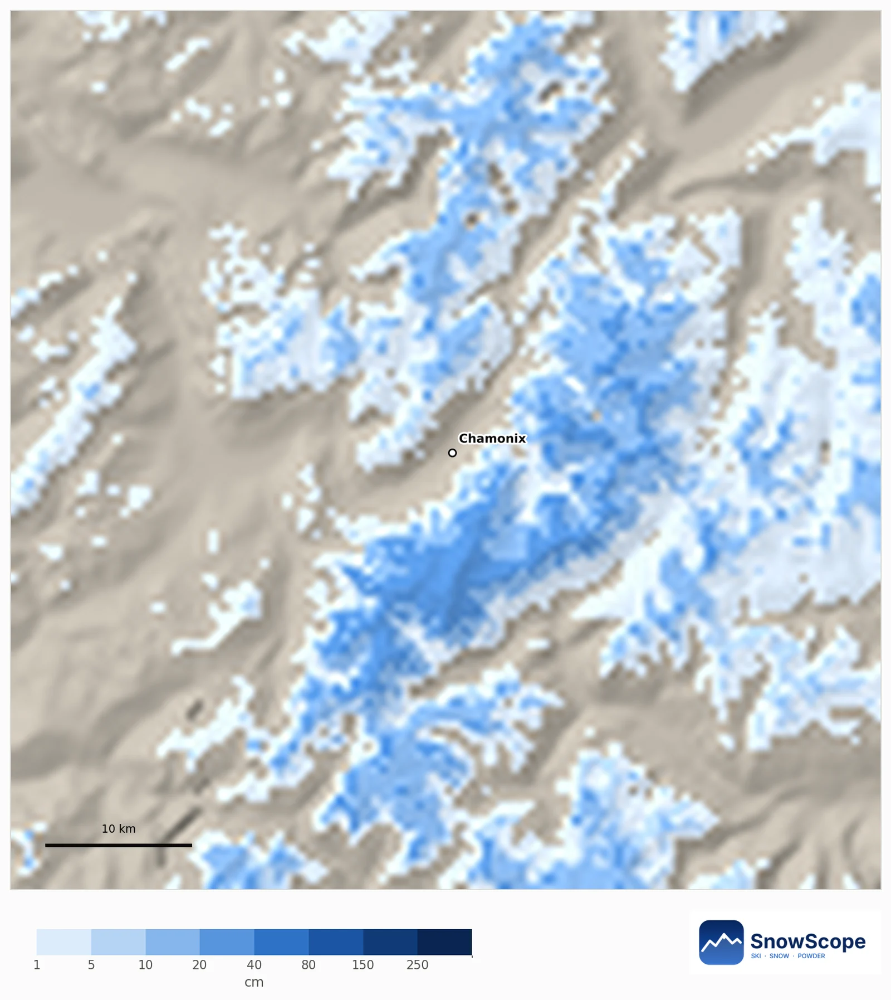

Glacier d'Hintertux en décembre : où est la bonne affaire d'une semaine sûre
Le chiffre clé d'abord : un 15 décembre typique, le haut du glacier d'Hintertux (3245 m) a 98 cm de neige dans nos 46 hivers d'historique, et la semaine du 15 au 21 décembre, chaque hiver sans exception avait au moins 30 cm là-haut. La question du rapport qualité-prix ne porte donc pas sur la neige, mais sur le prix et le bas de la montagne.
Consultez les prévisions neige en temps réel pour Hintertuxer Gletscher sur l'application SnowScopeHauteurs de neige, alertes poudreuse et carte 3D, gratuitement.Neige : validée
Hintertux fait partie des rares endroits des Alpes où la neige de décembre est presque certaine en haut. À mi-pente (2372 m), un 15 décembre typique compte 52 cm, et 87 % de nos hivers avaient 30 cm ou plus la semaine du 15 au 21 décembre ; la semaine de Noël, 93 %.
Les années maigres existent, mais même là le glacier tient : un hiver sur 10, le haut n'a que 44 cm le 15 décembre. L'hiver dernier, plutôt faible, avait quand même 44 cm en haut ce jour-là.


Prix : validé
La grille officielle 2026-27 n'a qu'un tarif pour toute la saison : forfait journée adulte à 82 EUR, 6 jours à 399 EUR. Pas de tarif réduit avant Noël : décembre n'est pas moins cher ici que février.
La vraie économie concerne les familles : selon la grille officielle, les enfants nés après le 1er janvier 2021 skient gratuitement avec un adulte (pièce d'identité nécessaire). Pour une famille avec un petit, cela pèse plus que toute remise de saison.
L'altitude et la question du glacier
Le point faible, c'est la vallée. La remontée la plus basse est à 1500 m, où un 15 décembre typique a 16 cm et où seuls 7 % de nos hivers avaient 30 cm la semaine du 15 au 21 décembre. Le premier jour habituel avec 30 cm en bas est le 7 janvier. En décembre, on skie en haut et on redescend en remontée.
La tendance est contrastée. À mi-pente, la moyenne de décembre est passée de 54 cm sur les 15 premiers hivers à 45 cm sur les 15 derniers, alors qu'en haut elle a tenu (95 et 101 cm). Le glacier sauve décembre ; les pertes se voient plus bas.
Comparé au Kitzsteinhorn
Le Kitzsteinhorn au-dessus de Kaprun suit le même schéma : 137 cm à son sommet de 3024 m un 15 décembre typique, 40 cm à mi-pente (1894 m) et presque rien à sa base de 765 m (6 cm). Ses prix sont plus élevés : 82 EUR la journée en haute saison et 440 EUR les 6 jours, ou 74 EUR et 396 EUR en début de saison.
Même prix à la journée, semaine moins chère et plus de neige à mi-pente à Hintertux (52 cm contre 40 cm). Pour un forfait 6 jours en décembre, Hintertux est la meilleure affaire des deux glaciers.
Avant de réserver
Hintertux n'est pas le décembre le moins cher d'Autriche, mais c'est le plus sûr en haut pour son prix. Choisissez-le si vous n'avez qu'une semaine, des dates fixes et aucune envie de parier sur la neige. Si vous pouvez attendre une bonne prévision, une station-village en altitude avec un tarif d'avant Noël peut coûter moins.
Conseils aux skieurs
- En décembre, prévoyez de skier la moitié haute (à partir d'environ 2372 m) et de redescendre en remontée : les pistes de retour sont rarement enneigées.
- Emportez une pièce d'identité pour les enfants nés après le 1er janvier 2021 : ils skient gratuitement avec un adulte.
- Un glacier à 3245 m peut être très froid et venté en décembre : cagoule et gants de rechange.
- Hors-piste sur glacier = crevasses : uniquement avec un guide et après le bulletin d'avalanches du Tyrol.
Autres cartes (sites externes)
Références et crédits
- Hintertuxer Gletscher: official lift-pass prices (2026-27), checked 13 November 2026 www.hintertuxergletscher.at/en/tickets-rates/tickets-rates/rates-hintertux-glacier/
- Kitzsteinhorn (Kaprun): official lift-pass prices (2026-27), checked 13 November 2026 www.kitzsteinhorn.at/en/tickets-prices/ski-board
À propos de ces chiffres
Chiffres de neige : historique SnowScope, 46 hivers passés (1980-81 à 2025-26) aux altitudes de la station, corrigé de l'altitude (une estimation pour une zone, pas les bulletins de la station) ; « bonne neige » = 30 cm ou plus au sol en moyenne sur la semaine. Carte : notre hauteur habituelle au 15 décembre répartie sur le relief selon l'altitude. Pistes et remontées : cartographie OpenSkiMap. Forfaits : grilles officielles des stations, vérifiées le 13 novembre 2026 ; les prix peuvent changer.
Bulletins d'avalanche officiels: Avalanche.report – Euregio Tyrol
Citer ce bulletin
Pour la recherche, l'enseignement ou la presse : chiffres et graphiques réutilisables librement sous CC BY 4.0 avec cette citation.
SnowScope (2026), Glacier d'Hintertux en décembre : où est la bonne affaire d'une semaine sûre, https://snowscope.app/blog/fr/2026/11/hintertux-glacier-december-value-ski-week.html, consulté le 2026-11-14
SnowScope (Atlas Labs). (2026, November 14). Glacier d'Hintertux en décembre : où est la bonne affaire d'une semaine sûre. SnowScope snow reports. https://snowscope.app/blog/fr/2026/11/hintertux-glacier-december-value-ski-week.html
BibTeX
@misc{snowscope2026hintertuxglacierdecember,
author = {{SnowScope (Atlas Labs)}},
title = {Glacier d'Hintertux en décembre : où est la bonne affaire d'une semaine sûre},
year = {2026},
month = nov,
howpublished = {\url{https://snowscope.app/blog/fr/2026/11/hintertux-glacier-december-value-ski-week.html}},
note = {Published 2026-11-14 13:29 UTC; accessed 2026-11-14}
}· CC BY 4.0 · Méthodes, données et outils →
Suivre Hintertuxer Gletscher
Gratuit : un message quand la neige arrive, et la météo chaque matin.
Autres bulletins neige

Où décembre 2026 s'annonce plus ou moins enneigé dans les Dolomites, du Val Gardena à Cortina : la prévision saisonnière européenne, notre carte et les chances d'un Noël blanc.

La neige du jour à Cortina, la prévision saisonnière européenne pour décembre et nos chances d'un Noël blanc dans l'est des Dolomites.

La neige du jour aux Grands Montets, la prévision saisonnière européenne pour décembre et notre carte des secteurs plus ou moins enneigés autour du Mont-Blanc.